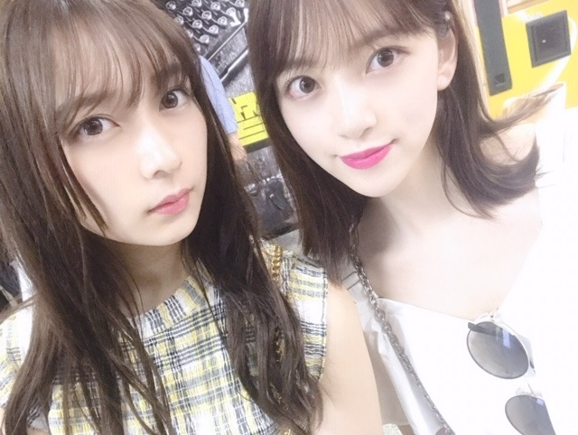
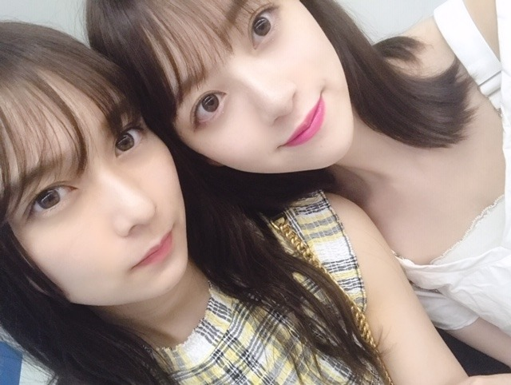

2019/0825Sun#24時間TV
こんにちは。
数日間、吐き気と目まいに襲われていて
たくさんの方にご心配とご迷惑をおかけしています、、
喉の薬の副作用と軽い熱中症らしいので
今はたくさんお水を飲んで安静にしています☺︎
ライブでは万全の状態で皆さんにお会いできるよう早く治します！
ご心配をおかけしてごめんなさい、、
最近は髪にもUVのスプレーを、
唇にもUVケアのものをつけています☺︎

キールズのリップクリームは
淡いピンクの色付きでSPF25 の唇のナチュラルな血色感もだしつつ、紫外線から唇を守ってくれる
有能リップクリームさんです❤︎
この他にも愛用しているリップクリームはたくさんありますが最近はこれがお気に入り

あとは堀家に新しいキャンドルも増えました！
たくさん種類のある中から
"SUMMERS NIGHT" "SECRET GARDEN"
の香りを選びました☺︎
絢音とお揃い~
そしてよーく見ると実はラベルに
♡MIONA♡
って入ってます！
メッセージや名前をラベルに入れられるキャンドル屋さんなの~ かわいいすぎる、
夜はアロマキャンドルに癒されてます...❤︎

キャンドルをそれぞれ選んでたのに
好きな匂いが結局同じで。笑 さすが☺︎❤︎
6年間ずっと一緒にいても
嫌なところなんて1つもないあやねちん
いつも体調を心配してくれたり嬉しいことがあると
1番に言ってきてくれたり
これからも、おばあちゃんになっても
仲良くしたいな~


このあと、24時間TVに出させていただきます！
わたしも朝から目玉焼きとお味噌汁と梨を食べながら少し観てきました。楽屋でも準備しながらみんなで観たよ。
是非、見てください☺︎
では
2019/08/25 13:54


コメント(404)
そして神宮では万全の状態でのパフォーマンスを見たいな
体調悪いのにありがとうね！
忙しいとは思いますが、しっかり休養とりながらお仕事して下さいね。
お大事にしてください‼️
未央ちゃんと絢音ちゃんは乃木坂ちゃんでもっとも素敵な女性と思っております。
無理せずしっかり休んでね。
絢音ちゃんとはホントに気が合うんだね。
なんだか姉妹みたいですね。
体調には気をつけてね。
24時間tvでは元気な姿が見れて良かったよ。
って言いたいけど体を休めてくれー！心配だ…
未央奈の姿を見れるのは嬉しいけど、体調も気をつけて
またね
24時間テレビ、リアルタイムで観ることができないので録画して帰ってから見ます！楽しみにしてます！
自分を1番に考えて！
堀ちゃん体調は大丈夫?無理せずにお仕事頑張ってくださいね
あと、ゆっくり休んでくださいね
24時間も見ますね
これからもずっと応援し続けてます
良かったです。
めまいって不安になりますよね。
だも原因も分かってるのなら、安心ですね。
大事でなく、ホント安心しました。
知らせてくれてありがとうございます！
水分補給は、しっかりとですね。
鈴木さんの存在、有り難いですね。
心が通じてるから互いに支えあえ、かけがえのない存在なのですね。
素敵な関係は大切に守りたいですね。
24時間TV観てますよ。
ポニーテールが可愛すぎてドキドキ、
美白の笑顔に釘付けになりましたよ。
回復傾向でホント安心です。
まだ油断せずに、ご自愛下さいね。
頑張って行きましょう！
体調大丈夫
これからも頑張ってくださいね
応援してます！！
更新ありがとう
ゆっくり休んで
ずっと応援してる
未央奈、声枯れ気味?みたいだったから心配
あと無理だけはしないでな～大丈夫、未央奈の精一杯を尽くせばいいさ
by、翔んで9メートル
未央奈さん元気そうで何よりでした。
安心安心。
体調きおつけてがんばってね。
新衣装可愛いかった(^^)
昨日は全握ミニライブお疲れ様
MC面白かった。笑
未央ちゃん体調大丈夫？
神宮もあるから無理しないでね！
斉藤貴巳
めまいって辛いよね。最近ちょっと涼しくなったから、このまま暑さが戻らなかったらいいけど、また暑くなるかもしれないし、熱中症対策してゆっくり休んでね！軽い熱中症になった時、ポカリスエットが凄く効いたから、ポカリスエットとかもたくさん飲んでね！
お仕事頑張ってね♪
未央奈と絢音は乃木坂のメンバーの中で、最も美しい名前の持ち主と思います。もちろん二人とも可愛いです。
風邪引いちゃったとき、水と薬を飲んでジブリの軽音楽を聴きながらキャンドルの香りに浸って寝ってそして恢復した。完璧です。あくまで個人的な意見です。
お大事に。
大丈夫ですかぁ。復活できるように「元気玉」送るよう。「えぃ。」って。
まぁ、安静に、、、ですよね。
あやねさん美人さんですね。もちょっと表情がほしいッス。
では、未央奈は、治るまで安静に。
じゃ
元気な未央奈は読みたいでー♡
24時間テレビ出演お疲れ様です。
体調大丈夫？くれぐれも無理しないようにね！
何よりも未央奈の体調が大事だから無理せずしっかり休んでね！！これからもずっと応援してるよ！
二人の天使！ 最強可愛さ！ 最高！
我ノックダウンです。 惚れぇ～～
未央奈に感謝感激！
でも、絢音ちゃん笑ってぇ～
御疲れ様でした！
絢音、未央奈の世話をしてくれて有難う！
二人、何時も頑張って下さい、
常に必ずしても応援しています。
どうか御身体に気を付けて下さい！
ずっと大好き！
神宮ライブ、最終日に行きます。
元気な未央奈が見たいです。
楽しみにしてます！
24時間テレビ見てますよぉ～勿論乃木坂の歌唱もリアルタイムで視聴しました！
神宮に向けて体調を万全にして無理をしないで頑張ってください！！
体調回復して良かったね。24時間TV観ましたよ。
今週末の神宮ライブまでに全快して、最高のパフォーマンスを披露してください。期待しています。
タオルとペンライト振って、未央奈ちゃんに見つけてもらってアイコンタクトしたいです‼
乃木坂46と頑張ってるcuteでsmartな未央奈ちゃんを応援しています。
無理をしているのに笑顔で対応してくれて今もこうやってブログを更新してくれて泣きそうです（ ; ; ）
24時間テレビとってもキラキラしていて意識が高くてもっと未央奈ちゃんが大好きになりました♡
次の握手会まで空いちゃうけど、とっても楽しみです。
本当にゆっくり休んでね（ ; ; ）
お疲れ様でした。
改めて、良い曲だと思いました。
(自分のしあわせを、少しずつ分け合えば笑顔は広がる)日本から、広がって行ったら良いなと思いました！！
狙い打ち
体調は大丈夫？
心配だよ(--;)
ゆっくり休んで治してね！
24時間TVみたよ！
未央奈前の所にいたよね！
いくちゃんのポジティブで踊っていたけど、めっちゃ良かった！
乃木坂の応援は見てる方や、遠泳のみんなに力となって届いてると思う！
俺にも元気もらったよ！
またコメントします！
めっちゃこわかったけど、
与田ちゃんと飛鳥ちゃんのシーンで感動して泣いてまった！
さすがの演技力ですね
24時間テレビ、
待機中に見た内容もとても良かった！
車イスのバリアフリー情報が集まったり、
遠泳では片足の子を隣の子がそっと支えてたり、
太陽色の世界、垣間見れたね！
みんなの歌声もきっと届いた！
神宮、晴れますよーに！
I shall always respect you.
熱中症ですか？暑いからね、仕方ないかぁ。
体調には気をつけてね！
熱中症は本当に辛いです、しっかり休んでください。
24時間テレビ見ました。本当に無理しないようにして下さい。
元気な姿でライブができるように今はしっかり休んでね。
待ってます❗️
体調はどうかな？
体調不良なのに、24時間TVに出演して大丈夫なの？
あまり無理しないでね。
最近は本当に暑いし、室内と屋外の気温差が激しくて体調管理も難しいよね。
もはや、外に立っているだけでも倒れそうだもん
外と内の設定温度をちょうどいい具合に調整できればいいけど、これがなかなか難しいものだよね
ピンク色のおしゃれアイテムが多いねっ！
特に、僕はキャンドルというものは使ったことがない。
類似品で使ったことがあるとすれば、蚊取り線香くらいかな(・ω・)
でも、今年はまだ蚊取り線香も使ってない。
何年か前までは、感情のまま「夏は暑くて嫌だ！」って思っていたけど、これが冬になったら、きっと「夏の暑さが懐かしいなぁ」って思うんだろうなぁっていうのが想像できる。
なので、今も大切にしなきゃなぁってよく思う
その為には、まず体調が悪かったらどうしようもないもんね。
それに、大人になったら体調管理も仕事のうちだと思うから。
大人になってから、感情のコントロールが多少はうまくなったかもしれないと感じることがあるよ。
２４時間ＴＶ、無理しないでね。
では。
ももんが
無理しない程度に頑張ってねー！！
お体、大切に。
絢音ちゃん、いい表情してる。
コメントする